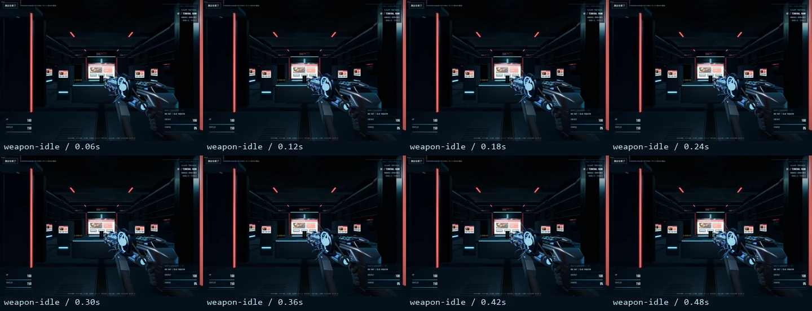
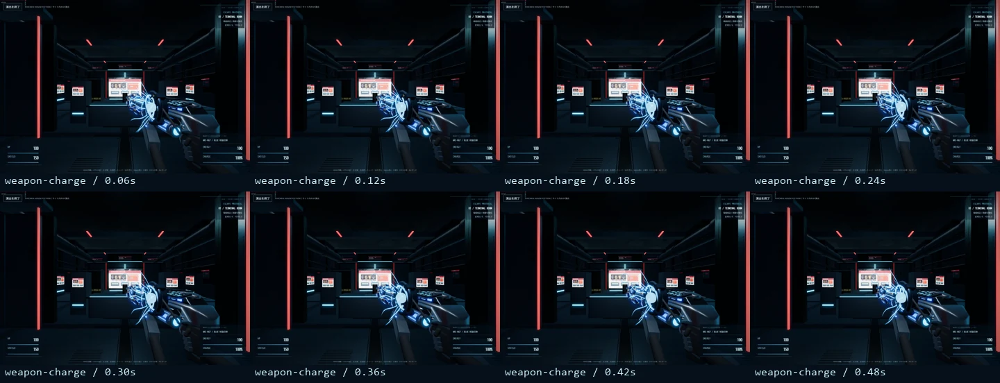
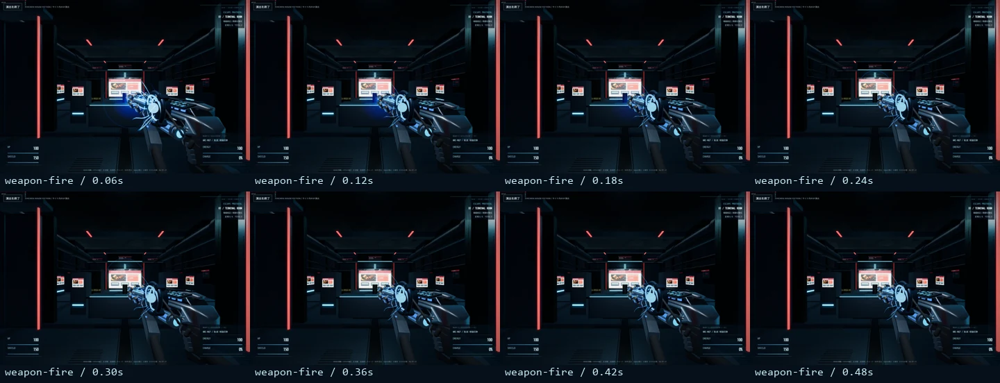

CHICKEN HOUSE / ZIP ADDITIONS / V5
動く青い心臓。左右の親指で戦う。
ZIPの不足分を追加。左スティックで移動、右スティックで照準。敵に照準が合うと自動射撃します。ジャンプ・ダッシュはスマホでは省略し、PC操作は維持しました。
スマホ操作の録画
実ブラウザーの描画と入力。敵と視点の準備だけデバッグを使用し、その後は実時間の自動射撃・2点タッチ・チャージ・セル交換。音声なし。PC上のスマホエミュレーションで、実機性能の証明ではありません。
左右2本のスティック
握り上のリアクター / 追加前後
 追加前 / チャージ追加後 / 核・リング・放電・リミッター
追加前 / チャージ追加後 / 核・リング・放電・リミッターPC High / Low
同じ武器とゲーム描画で撮影。新しい全画面パスやライトは追加せず、Lowでは放電流とリミッター数を減らしています。
HIGH
LOW
状態ごとの連番
実装を0.06秒ずつ進めた24フレーム。合成した理想画像ではありません。
アイドル / 0.06秒刻み

アイドル / 0.06秒刻み8フレームを原寸で確認
チャージ / 0.06秒刻み

チャージ / 0.06秒刻み8フレームを原寸で確認
発砲後 / 0.06秒刻み

発砲後 / 0.06秒刻み8フレームを原寸で確認
確認と制約
スマホ33項目、エネルギー機構18項目、既存武器15・FPS25・端点16、Node9スイートを検証。自動予備射撃中に照準を外した場合やCHARGE／セル交換を押した場合は、予備射撃を取り消します。貨物越しの自動射撃も停止します。
独立した画像批評でHigh／Lowの静止・発砲・セル交換と24連番のMajor指摘を解消。核内部の明暗には磨き込みの余地があります。疎な連番から正確な回転速度や音同期は評価していません。
GTX1080Ti / 1440×1000 / 同じ15秒自動戦闘で、Highは平均58.96→59.72fps、Lowは59.93→59.95fps。キャッシュ・AI・測定順の差があるため性能改善とは判断しません。追加負荷と生データは報告書へ。スマホ実機の性能・熱・電池は未測定です。
新しい3Dアセットや実行時の生成AI呼び出しは追加していません。通常のレストランサイトはFPSの遅延読み込みを維持します。